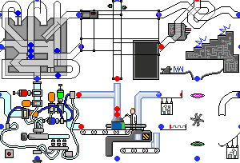
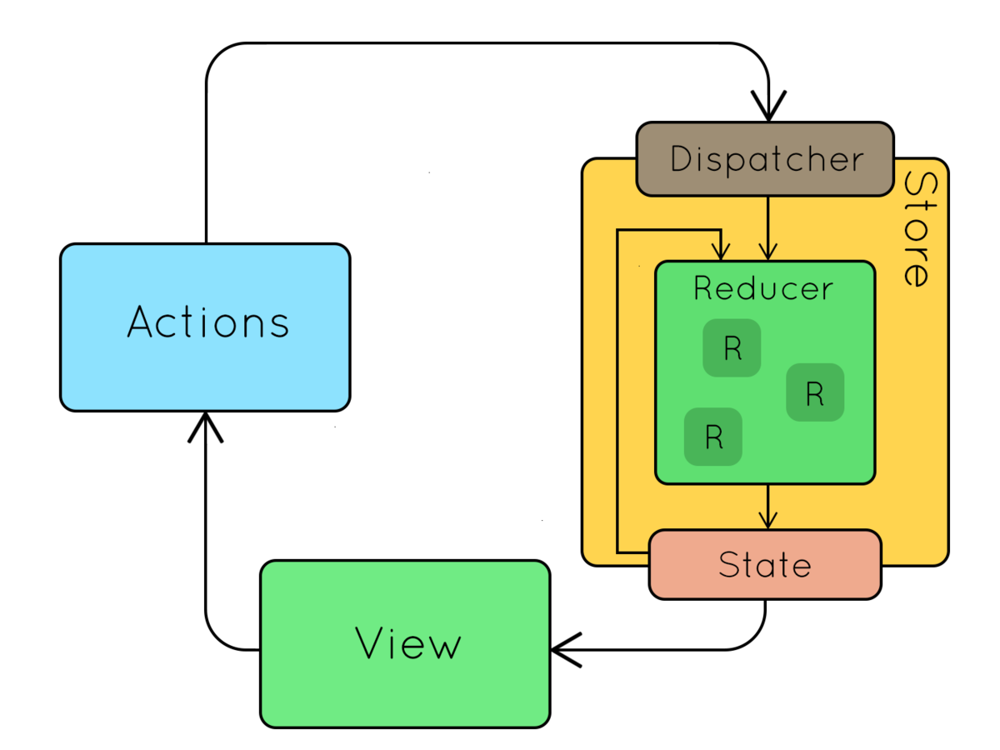

A predictable state container for JavaScript apps.
Sitio Oficial: https://redux.js.org/
Fecha de lanzamiento: Junio de 2015
Versión actual(estable): 3.7.2
Dan Abramov
Librerías
- Redux
- React Hot Loader
- Create React App
Estados
Sin redux
App con redux
Estado ordenado
Fácil de implementar nuevas funcionalidades
Código mantenible
Fácil de testear
Los 3 principios
- Única fuente de la verdad
Todo el estado de la aplicación es un objeto
- El estado es de solo lectura
La única manera de cambiar el estado es despachando una acción, un objeto que describe lo que sucedió.
- Los cambios se realizan con funciones puras
Para especificar cómo el estado es transformado por medio de las acciones, se debe definir un reducer.
Acción
Minima representación de los cambios en la aplicación.
{
type: 'DEPOSIT',
value: 10
}Reducer
Función que recibe el estado actual y una acción, y retorna el estado siguiente.
function counter(state = 0, action) {
switch (action.type) {
case 'DEPOSIT':
return state + action.value;
case 'WITHDRAW':
return state - action.value;
default:
return state;
}
}Store
Une los 3 principios de redux.
Contiene el objeto del estado actual.
Te permite despachar acciones y suscribirte a los cambios en el estado
Flujo
Flujo

Instalación
npm install --save redux